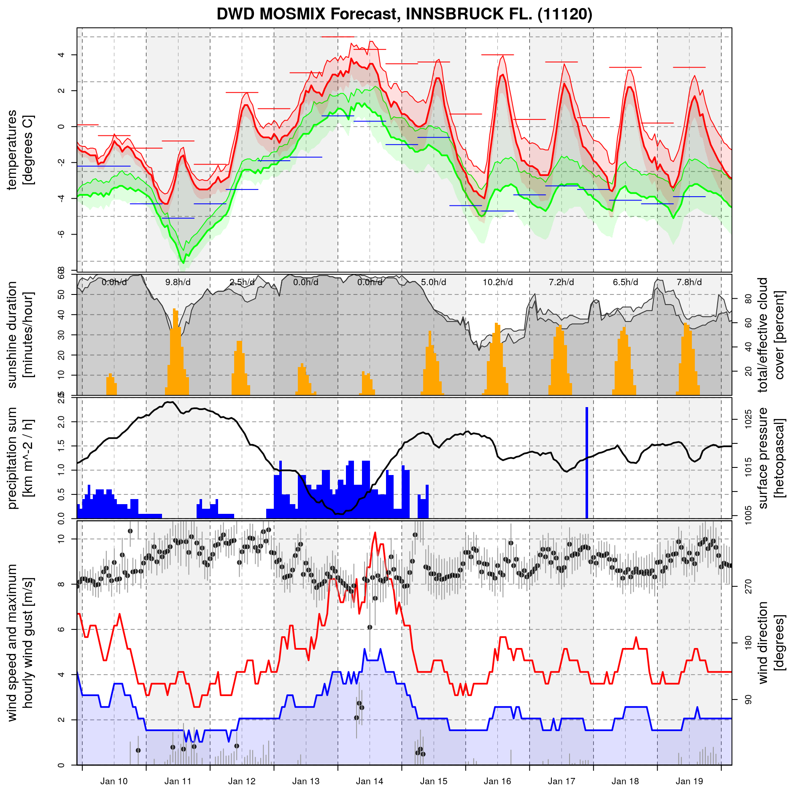

gettingstarted.Rmdlibrary("mosmix")## Loading required package: zoo##
## Attaching package: 'zoo'## The following objects are masked from 'package:base':
##
## as.Date, as.Date.numeric## Loading required package: sp## Loading required package: methods## Loading required package: XML##
## mosmix: Please note that the time zone of this session has been set to UTC!library("zoo")
# Latest L-type DWD MOSMIX forecast file for Innsbruck Airport
url <- "https://opendata.dwd.de/weather/local_forecasts/mos/MOSMIX_L/single_stations/11120/kml/MOSMIX_L_LATEST_11120.kmz"
# Download and extract file
kmz <- tempfile("mosmix_demo_", fileext = ".kmz")
check <- download.file(url, kmz)
if ( inherits(check, "try-error") ) stop("Problems downloading the file!")
kml <- unzip(kmz)
# Parsing the unzipped kml file (XML format)
# And extract required datetime and meta information.
doc <- XML::xmlParse(kml)
datetime <- get_datetime(doc)
meta <- get_meta_info(doc)
stations <- get_station_information(doc)
# Extracting forecasts now
# - parameter = NULL: extracts all parameters
# - as.zoo = TRUE: returns a time series object.
fcst1 <- get_forecasts("11120", doc, datetime, meta)## Processing station 11120print(fcst1)## DWD MOS Forecast Object
##
## Issuer: Deutscher Wetterdienst
## ProductID: MOSMIX
## GeneratingProcess: DWD MOSMIX hourly, Version 1.0
## IssueTime: 2019-01-09 21:00:00 UTC
## ReferencedModel(s)
## - 2019-01-09 12:00:00 UTC, ICON
## - 2019-01-09 12:00:00 UTC, ECMWF/IFS
##
## Object is of class zoo: TRUE
## Station identifier: 11120
## Station description: INNSBRUCK FL.
## Station location: 11.35,47.27,581.0 (lon/lat/alt)
## First forecast for: 2019-01-09 22:00:00
## Last forecast for: 2019-01-20 04:00:00
## Number forecasts (time): 247
## Number of parameters: 98## [1] "dwdforecast" "zoo"## PPPP E_PPP TX TTT E_TTT
## 2019-01-09 22:00:00 101590 20 NA 272.05 0.5
## 2019-01-09 23:00:00 101610 40 NA 271.85 0.5
## 2019-01-10 00:00:00 101650 50 NA 271.75 0.6
## 2019-01-10 01:00:00 101680 60 NA 271.75 0.6
## 2019-01-10 02:00:00 101700 60 NA 271.65 0.5
## 2019-01-10 03:00:00 101790 60 NA 271.55 0.8print('x')## [1] "x"plot(fcst1)## [1] "xxxxxx"
## [1] "DWD MOSMIX Forecast, INNSBRUCK FL. (11120)"# Extracting forecasts now
# - parameter = NULL: extracts all parameters
# - as.zoo = FALSE: returns a data.frame
fcst2 <- get_forecasts("11120", doc, datetime, meta, as.zoo = FALSE)## Processing station 11120print(fcst2)## DWD MOS Forecast Object
##
## Issuer: Deutscher Wetterdienst
## ProductID: MOSMIX
## GeneratingProcess: DWD MOSMIX hourly, Version 1.0
## IssueTime: 2019-01-09 21:00:00 UTC
## ReferencedModel(s)
## - 2019-01-09 12:00:00 UTC, ICON
## - 2019-01-09 12:00:00 UTC, ECMWF/IFS
##
## Object is of class zoo: FALSE
## Station identifier: 11120
## Station description: INNSBRUCK FL.
## Station location: 11.35,47.27,581.0 (lon/lat/alt)
## First forecast for: 2019-01-09 22:00:00
## Last forecast for: 2019-01-20 04:00:00
## Number forecasts (time): 247
## Number of parameters: 99## [1] "dwdforecast" "data.frame"## DWD MOS Forecast Object
##
## NULL
## NULL
##
## Object is of class zoo: FALSE
## Station identifier: datetime PPPP E_PPP TX TTT
## Station description:
## Station location: (lon/lat/alt)
## First forecast for: 2019-01-09 22:00:00
## Last forecast for: 2019-01-10 03:00:00
## Number forecasts (time): 6
## Number of parameters: 5# Extracting forecasts now
# - parameter is set: return 2m temperature and 2m dewpoint
# temperature only (see parameter_description method)
# - as.zoo = TRUE: returns a time series object.
fcst3 <- get_forecasts("11120", doc, datetime, meta, parameter = c("TTT", "Td"))## Processing station 11120print(fcst3)## DWD MOS Forecast Object
##
## Issuer: Deutscher Wetterdienst
## ProductID: MOSMIX
## GeneratingProcess: DWD MOSMIX hourly, Version 1.0
## IssueTime: 2019-01-09 21:00:00 UTC
## ReferencedModel(s)
## - 2019-01-09 12:00:00 UTC, ICON
## - 2019-01-09 12:00:00 UTC, ECMWF/IFS
##
## Object is of class zoo: TRUE
## Station identifier: 11120
## Station description: INNSBRUCK FL.
## Station location: 11.35,47.27,581.0 (lon/lat/alt)
## First forecast for: 2019-01-09 22:00:00
## Last forecast for: 2019-01-20 04:00:00
## Number forecasts (time): 247
## Number of parameters: 2## [1] "dwdforecast" "zoo"## TTT Td
## 2019-01-09 22:00:00 272.05 269.25
## 2019-01-09 23:00:00 271.85 269.35
## 2019-01-10 00:00:00 271.75 269.35
## 2019-01-10 01:00:00 271.75 269.35
## 2019-01-10 02:00:00 271.65 269.35
## 2019-01-10 03:00:00 271.55 269.25# Remove kmz and kml file
file.remove(kmz, kml)## [1] TRUE TRUE